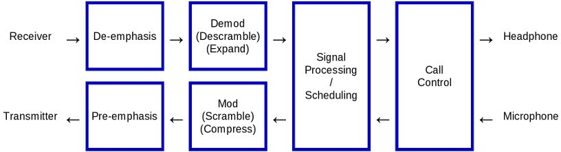
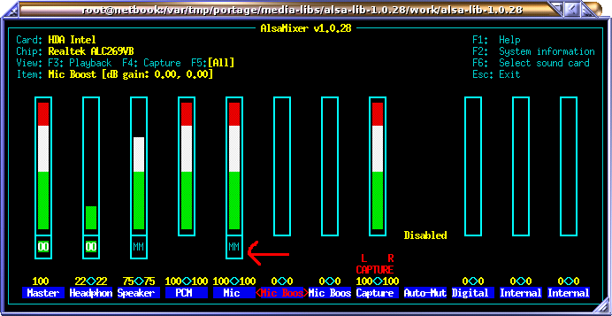
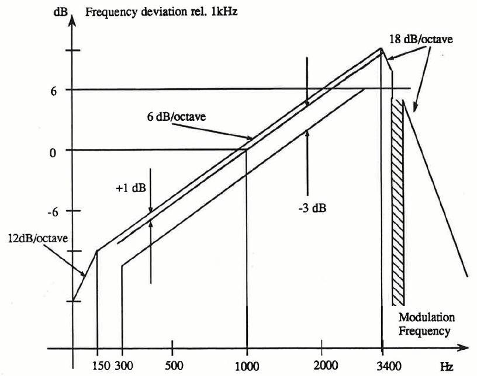
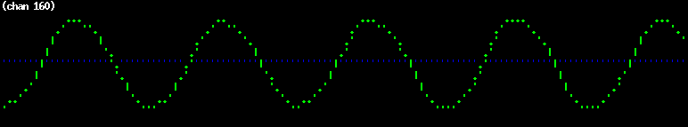
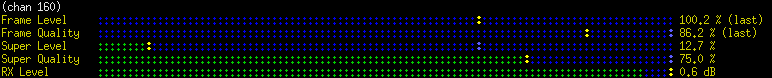
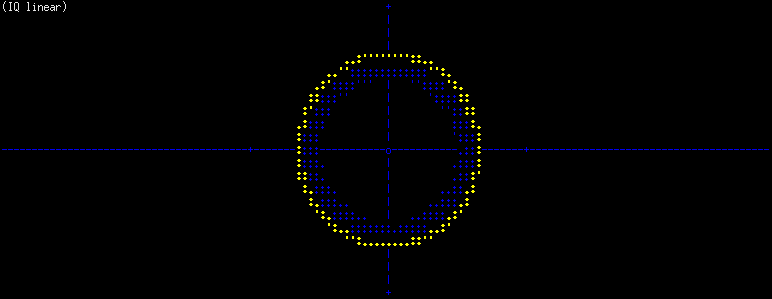
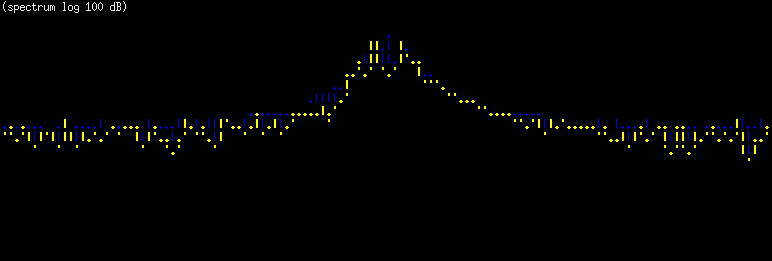

Software usage

To get a list of all options, run the base station software (E.g bnetz) with no parameter or '-h' or '--help'.
Sound interface using ALSA
Most machines have only one sound adapter installed.
A second sound adapter is required to talk through the base station to have a conversation.
To get a list of devices, run 'arecord -l'.
This is how it looks, if there are two sound adapters installed:
# arecord -l
**** List of CAPTURE Hardware Devices ****
card 0: Intel [HDA Intel], device 0: ALC269VB Analog [ALC269VB Analog]
Subdevices: 1/1
Subdevice #0: subdevice #0
card 2: Set [C-Media USB Headphone Set], device 0: USB Audio [USB Audio]
Subdevices: 1/1
Subdevice #0: subdevice #0
Sound card 0, device 0 is used by default.
Run B-Netz base station on channel 1 to test if your default sound adapter works:
# src/bnetz/bnetz -k 1
...
bnetz.c:268 info : Entering IDLE state, sending 'Gruppenfreisignal' 2 on channel 1.
Base station ready, please tune transmitter to 153.010 MHz and receiver to 148.410 MHz.
To call phone, switch transmitter (using pilot signal) to 153.370 MHz.
Alternatively select a different sound adapter.
If you prefer card 2, device 0, add '-a hw:2,0' or '--audio-device hw:2,0' to the command line:
# src/bnetz/bnetz -k 1 -a hw:2,0
Prevent Puleaudio from occupying a sound adapter
In some cases, pulseaudio occupies the sound interface, so that it cannot be used via ALSA API.
"Device or resource busy" will be reported by the application.
One way would be to stop pulseaudio daemon, if there is only a single audio device available.
If an extra sound device, like an USB stick shall be used, we can just block it for pulseaudio, using udev rule.
First, we need to check the device ID using lsusb (USB) or lspci (PCI):
# lsusb
...
Bus 001 Device 030: ID 0bda:4937 Realtek Semiconductor Corp. Realtek Audio USB
...
In this case there is an USB stick with vendor ID "0bda" and device ID "4937".
If nano is our favorite editor, we add a new udev rule (sudo or be root):
# nano /etc/udev/rules.d/89-pulseaudio-ignore_0bda_4937.rules
Choose any index (like 89), but be sure that it must be lower than any other pulseaudio rule, if there is any at all. Add some name that explains exactly what device is blocked, but feel free to user any other name.
Add this line to block the device shown above, but use the right IDs:
ATTRS{idVendor}=="0bda", ATTRS{idProduct}=="4937", ENV{PULSE_IGNORE}="1"
When using PCI, you need to reboot.
When using USB, unplug it and then load the new rules before replugging it:
udevadm control --reload-rules
To verify that the rule works, check if the device is available using "pavucontrol".
Do that before and after, to see the effect.
Basic level adjustment
To adjust input and output levels of your sound card, run 'alsamixer'.

To avoid echo of audio input (mic), mute the input (select item and press 'm').
We want to capture microphone, but not echo it back to the audio output.
Also we want audio on line/headset output and capture from microphone input.
Do not use input gain on the microphone.
Now we want to calibrate transmitter and receiver audio level.
Run the B-Netz base station in loopback test mode (-l 2).
Even if you plan to setup A-Netz base station, use B-Netz base station for calibration.
# src/bnetz/bnetz -k 1 -l 2
bnetz.c:268 info : Entering IDLE state, sending 'Gruppenfreisignal' 2 on channel 1.
Base station ready, please tune transmitter to 153.010 MHz and receiver to 148.410 MHz.
To call phone, switch transmitter (using pilot signal) to 153.370 MHz.
Tune your transmitter AND receiver to 153.010 MHz.
Press the PTT button on you transmitter and talk into it.
Check if you hear your voice at a normal level from the receiver.
Then connect the audio output (headphone) of your sound adapter to your transmitter, by using a variable resistor.
You should hear now the whistle sound clearly on the receiver, once you turn up the variable resistor.
Adjust the audio output so that the tone is not over-driven, but the volume similar to your voice when you talked into the transmitter.
The sound must be clear without any background noise or distortion.
Now connect the audio input (microphone) to your receiver, by using a variable resistor.
Enable the transmitter. (PTT button)
You should now see the signal being decoded by the base station:
bnetz.c:474 notice : Received telegramm 'Ziffer 2'. (quality=99% level=133%)
bnetz.c:478 notice : Round trip delay is 0.053 seconds
bnetz.c:474 notice : Received telegramm 'Ziffer 3'. (quality=98% level=133%)
bnetz.c:478 notice : Round trip delay is 0.054 seconds
bnetz.c:474 notice : Received telegramm 'Ziffer 4'. (quality=99% level=131%)
bnetz.c:478 notice : Round trip delay is 0.053 seconds
bnetz.c:474 notice : Received telegramm 'Ziffer 5'. (quality=97% level=130%)
bnetz.c:478 notice : Round trip delay is 0.054 seconds
Adjust the input level so that the received signal level is around 100%.
If the input level cannot be adjusted up to 100%, leave it as it is.
There is an option later in this manual to add RX gain.
The quality should be 90% or better.
Now you have connected the base station to your radio equipment and roughly adjusted the levels.
For fine-tuning, refer to each network description.
Finally store the settings using "alsactl store" command.
Do this whenever you want to keep your adjustments.
Emphasis
Pre-emphasis is used on the transmitter and de-emphasis is used on the receiver side.
The nature of FM causes noise amplitude to be proportional to the transmitted frequency.
(double frequency = double noise volume)
To compensate this, most FM radios, as well as all analog mobile networks use emphasis.

As depicted, a frequency of 1000 Hz passes the pre-emphasis without any change.
The double frequency (2000 Hz) is amplified to double amplitude (+6 dB).
The result is that higher frequencies are transmitted with more deviation (louder) than lower frequencies.
On the receiver, the process is reversed.
A frequency of 2000 Hz is lowered down to half of it's amplitude (-6 db), so it becomes the original amplitude again.
Generally a transmitter is doing pre-emphasis for you.
If you are connected directly to the PLL of your transmitter, you will also not have pre-emphasis.
In this case you need to do it inside the base station software. Use the command line option '-p' or '--pre-emphasis':
# src/bnetz/bnetz -k 1 --pre-emphasis
The receiver is doing the de-emphasis for you.
If you are connected directly to the discriminator of your receiver, you will also not have de-emphasis.
In this case you need to do it inside the base station software. Use the command line option '-d' or '--de-emphasis':
# src/bnetz/bnetz -k 1 --de-emphasis
RX-Gain
Especially if you use discriminator output, you might have low output voltage.
In my experiments it helps to amplify the amplitude by factor two in order adjust a received signal to 100%.
A gain of 6 dB will amplify the amplitude by factor two.
Also the noise of the sound adapter will be amplified by factor two, but this is not relevant at 16 bit resolution.
Use the command line option '-g 6' or '--rx-gain 6'.
In this example I use both, transmitter and receiver without emphasis (so software must do it) and add extra 6 dB gain to the input from the receiver:
# src/bnetz/bnetz -k 1 -p -d -g 6
Loop-back Test
As used before, the loop-back test can be used to verify the signal process, such as level, delay and quality.
If command line option '-l 1' or '--loopback 1' is given, a loop-back inside the software is performed.
Also the audio signal is sent to the audio adapter, but not received from it.
This test is used to debug the software.
It can be used to see what the output of an external loop would look like.
./bnetz/bnetz -k 1 -l 1
bnetz.c:351 info : Entering IDLE state, sending 'Gruppenfreisignal' 2.
Base station for channel 1 ready, please tune transmitter to 153.010 MHz and receiver to 148.410 MHz.
To call phone, switch transmitter (using pilot signal) to 153.370 MHz.
bnetz.c:509 info : RX Level: 100% Quality=99
bnetz.c:524 notice : Received telegramm 'Ziffer 0'.
bnetz.c:528 notice : Round trip delay is -0.048 seconds
bnetz.c:509 info : RX Level: 100% Quality=98
bnetz.c:524 notice : Received telegramm 'Ziffer 1'.
bnetz.c:528 notice : Round trip delay is 0.000 seconds
bnetz.c:509 info : RX Level: 100% Quality=98
bnetz.c:524 notice : Received telegramm 'Ziffer 2'.
bnetz.c:528 notice : Round trip delay is 0.000 seconds
bnetz.c:509 info : RX Level: 100% Quality=99
bnetz.c:524 notice : Received telegramm 'Ziffer 3'.
bnetz.c:528 notice : Round trip delay is 0.000 seconds
bnetz.c:509 info : RX Level: 100% Quality=99
bnetz.c:524 notice : Received telegramm 'Ziffer 4'.
bnetz.c:528 notice : Round trip delay is 0.001 seconds
If command line option '-l 2' or '--loopback 2' is given, an external loop-back is performed.
The receiver needs to be tuned to transmitter, so the software receives its own signal.
The received quality level is relevant. It should be not less than 90 for B-Netz.
If command line option '-l 3' or '--loopback 3' is given, the audio from the input is sent back to the output.
It can be used to check a headset.
Everything that is spoken into the microphone should appear on the headphone.
On-screen displays

Essentially for monitoring the input level is the 'w' key.
You will get an ASCII art plot of received audio signal.
Press 'w' again to turn off this view.

To check measurements like input level and quality, press the 'm' key.
You will get an ASCII art plot of different bar graphs.
They show tone / frame level and quality.
The green bar shows the current level.
The yellow marker shows the last/peak/average level.
The light blue marker shows the target level.
Some measurement like RF level, frequency offset and peak deviation are only available with SDR.
Press 'm' again to turn off this view.

Only works with SDR:
You can monitor IQ data by pressing 'q' key.
You will get an ASCII art plot of received IQ data.
Press 'q' again and you will get a logarithmic view of IQ vectors.
Press 'q' again to turn off this view.
Please monitor this view when the phone tries to call or register.
If the dots are yellow, or red, the received signal may overdrive the ADC.
Especially when the linear view shows a deformed circle (or even rectangle), reduce RX level.

Only works with SDR:
Press 's' to get an ASCII art graph of received frequency spectrum.
The spectrum's bandwidth is defined by the sample rate (-s) and not by the SDR sample rate!
If you don't get nice peaks, but maybe several peaks, you might over-driven the input.
Note that the peak will spread by the frequency deviation, so the peak might look noisy on the top.
If the peak is quite low, check the input gain.
Press 's' again to turn off this view.
Current transceiver and call state can be viewed by pressing 'c' key.
Press 'c' again to turn off this view.
Mobile to mobile calls
Calls can be forwarded between mobiles.
By default, only one call can be made with the built-in console.
If a headset is used, only one call can be made between headset and one mobile station.
If call forwarding is used, two (or more) mobile stations can directly call each other.
It is essential to have at least two voice channels of course.
Depending on the network, a control channel or alternatively a combined control+voice channel is required.
This feature makes sense for SDR only, because SDR can provide multiple voice and control channels.
(It is also possible to use two radio receivers and transmitters connected to a sound card.)
To forward calls, be sure to configure the network with at least two channels that support voice.
Add '-x' to your command line.
On one phone, enter the number of the other phone and start the call.
nmt -k 1 -k 4 -a hw:0,0 -a hw:0,0 -T CC/TC -T TC -0 1 -0 2 -Y se,1 -x
This example will run a base station with two channel (1 and 4) via two radios connected to a stereo sound card.
The sound card is accessed via '-a hw:0,0'.
Because the sound card is stereo, the '-a' option can be given for two channels.
The first channel is a combined control+traffic channel and the second a traffic channel.
Both channels have different supervisory signals '-0 1 -0 2'.
The station code is '-Y se,1'.
Refer to NMT section about configuring an NMT network.
I highly recommend to use an SDR instead of radios connected to a sound card.
Increase performance on ARM CPUs (Raspberry PI)
To see the CPU consumption of all threads, enter "top -H" into the shell:
top - 14:55:31 up 1 day, 22:27, 3 users, load average: 0,75, 0,19, 0,06
Threads: 113 total, 2 running, 66 sleeping, 0 stopped, 0 zombie
%Cpu(s): 30,2 us, 2,1 sy, 0,0 ni, 55,7 id, 11,2 wa, 0,0 hi, 0,7 si, 0,0 st
KiB Mem : 949448 total, 523164 free, 134692 used, 291592 buff/cache
KiB Swap: 102396 total, 102396 free, 0 used. 751960 avail Mem
PID USER PR NI VIRT RES SHR S %CPU %MEM TIME+ COMMAND
11375 root -2 0 165148 97956 4940 R 91,1 10,3 0:24.29 nmt
11391 root -2 0 165148 97956 4940 S 13,8 10,3 0:04.00 nmt-sdr_tx
11392 root -2 0 165148 97956 4940 S 13,8 10,3 0:03.91 nmt-sdr_rx
11380 root 20 0 165148 97956 4940 S 2,3 10,3 0:01.20 nmt
11390 root -2 0 165148 97956 4940 S 2,0 10,3 0:00.58 nmt
11389 root -2 0 165148 97956 4940 S 1,3 10,3 0:00.51 nmt
11441 root 20 0 10056 3544 3096 R 1,3 0,4 0:00.19 top
19768 root 20 0 10056 3272 2752 S 1,3 0,3 19:16.50 top
67 root 20 0 0 0 0 S 0,3 0,0 0:02.80 mmcqd/0
9913 root 20 0 0 0 0 I 0,3 0,0 0:00.04 kworker/u8:0
1 root 20 0 28004 5916 4788 S 0,0 0,6 0:04.68 systemd
...
In this case I use a Raspberry PI and run NMT network with multiple channels.
It is almost at the limit, since I have around 90% CPU usage of the main thread.
It wouldn't work to have 2 transceivers at 200KHz Bandwidth without fast math approximation.
Use '--fast-math' to increase processing speed.
[Back to main page]
|